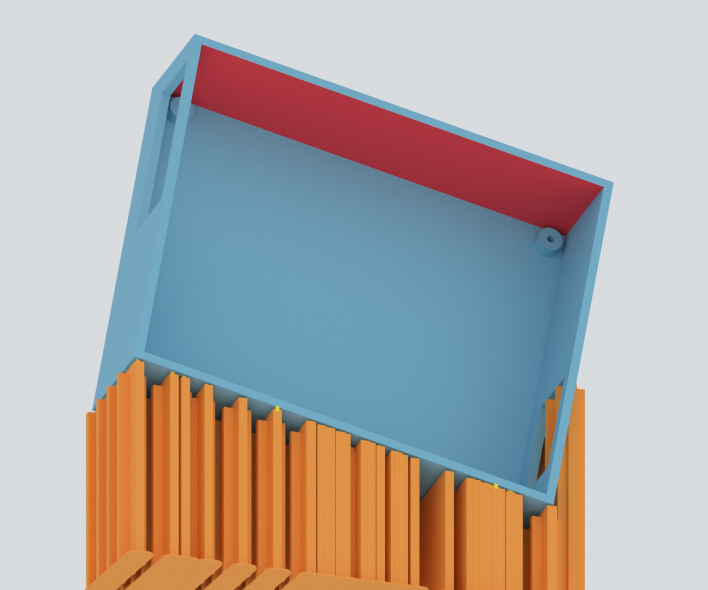
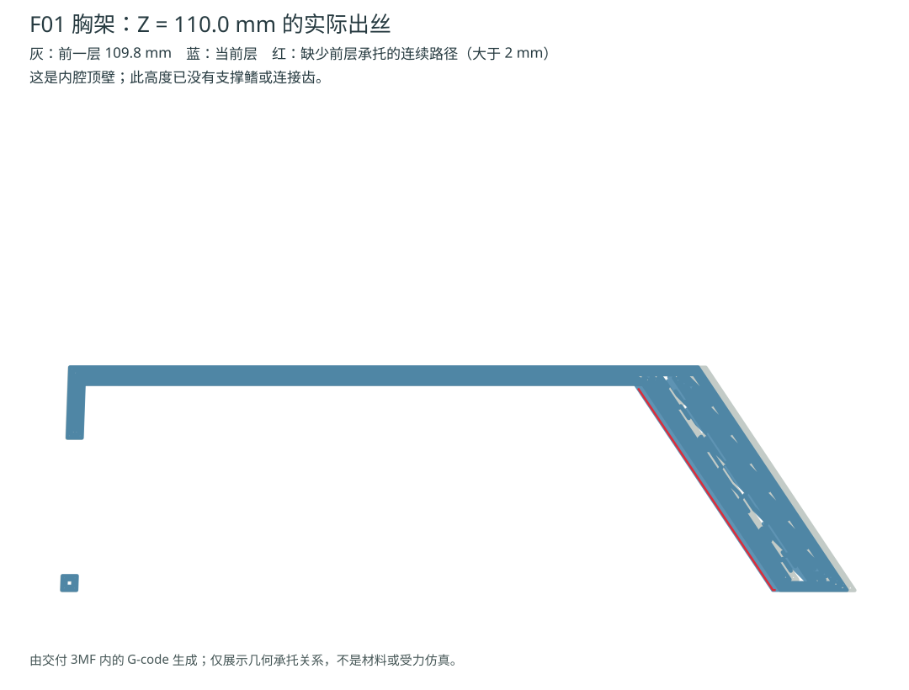

暂勿打印当前 F01_O22F3_PLA_fins。此前建议先试 F01 不成立，已撤回。未修改打印几何；本页是对已交付文件的复核证据。
下图由交付零件的真实网格渲染。红色是漏掉的内顶面；橙色为现有支撑、黄色为连接齿。相机转向盒腔以展示问题。


旧检查把一层的出丝合并成连通区域，只在整个区域几乎不接触前层时报告悬空。内顶板仍连着侧壁，因而被放过。鳍板生成又排除了被低层本体挡住的垂直落盘通路，却没有把因此失去支撑的关键面判为交付失败。之前报告的 149 / 145 处并不代表全部缺支撑区域。
必须重新选择朝向，让盒腔内顶面可自支撑、朝上，或能从热盘建立不穿模的支撑通路；若仍不可行，再考虑将盒体改为单独安装件并核对安装、PCB 与姿态包络。不能从盒底上建立新鳍来违反全落盘要求，也不能继续仅增加盒体外侧支撑。
当前没有给出新打印版，也没有做熔丝或受力仿真；不能声称该件必然坍塌或能够可靠打印。